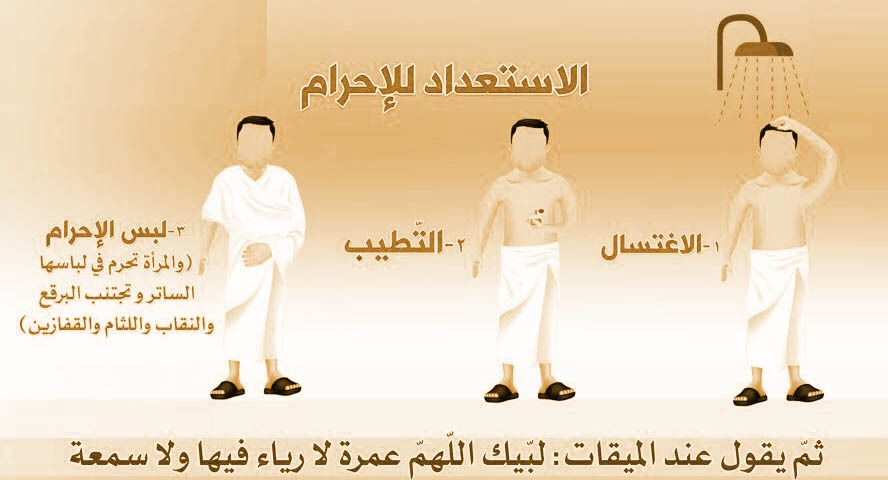

1- الإحرام من الميقات

الإحرام من الميقات
Read More
الأخطاء الشائعة
- تجاوز الميقات دون إحرام.
- الاعتقاد بأن الإحرام هو ارتداء ملابس الإحرام التي هي الرداء والإزار، وهذا غير صحيح، بل لابد لصحة الإحرام من نية الدخول في النسك.
- وضع الطِّيب على الرداء أو الإزار قبل الإحرام، وهذا من الأخطاء؛ إذ السُّنَّة في ذلك وضع الطِّيب على البدن قبل الإحرام، أما ملابس الإحرام فلا يطيِّبها.
- اعتقاد أن الغسل أو الوضوء عند الإحرام واجب، وإنما هو سنة مستحبة، فلو أحرم من غيرهما فإن إحرامه صحيح.
- كشف المحرم كتفه الأيمن دائمًا من حين إحرامه من الميقات، وهو ما يسمى بـ "الاضطباع" وهو خلاف السُّنَّة، وإنما فعل النبي صلى الله عليه وسلم ذلك في طواف القدوم وطواف العمرة فحسب، فإذا انتهى المحرم من طوافه أعاد رداءه على كتفيه في بقية المناسك. وكذلك يغطي كتفيه إذا كان في صلاة أثناء طوافه ثم يكشفه بعدها فيما بقي من طوافه.
- اعتقاد المرأة الحائض أنه لا يجوز لها الإحرام، وأن لها أن تتجاوز الميقات من غير إحرام، فيجب عليها أن تحرم قبل الميقات، ولكنها لا تطوف بالبيت حتى تطهر.
- اعتقاد بعض النساء أن للإحرام ثيابًا خاصة بهن، والصحيح أن المرأة يجوز لها أن تُحرم بثيابها المعتادة، لكنها تتجنب لبس النقاب والقفازين.
- الدخول في النسك ثم تركه قبل إتمامه، وهذا من الأخطاء؛ لمخالفته قول الله تعالى: { وأتموا الحج والعمرة لله }.
الإحرام
- عند الميقات – أو قبله - تنظف و اغتسل كما تغتسل من الجنابة و تطيب إن تيسر لك ذلك، ثم البس ملابس الإحرام، و هو إزار و رداء.
أما المرأة فلها أن تحرم فيما شاءت من الثياب مع الحذر من التشبه بالرجال ، لكن ليس لها أن تلبس النقاب والقفازين حال إحرامها، لكن عليها ستر وجهها وكفيها بحائل غير النقاب والقفازين عند خوف الفتنة ووجود الرجال الأجانب.
- فإن كان وقت فريضة صليت، وإلا فتصلي ركعتين تنوي بهما سنة الوضوء، إلا الحائض والنفساء فلا تصليا.
- فإذا فرغت من الصلاة فانو العمرة بقلبك- عند الميقات- ، وتلفظ بالنسك الذي تريده بقول : لبيك عمرة ،فإن كنت خائفاً من عائق يعوقك عن إتمام النسك فينبغي لك أن تشترط عند الإحرام قائلاً: إن حبسني حابس فمحلي حيث حبستني، وإن كنت لا تخاف شيئًا فلا تشترط.
- بعدها يحرم عليك لبس المخيط و إزالة الشعر ، و تقليم الأظافر ، و تغطية الرأس والوجه بملاصق ؛ كالطاقية والغترة والعمامة أو نحو ذلك .
- كما يحرم استعمال الطيب , و الصيد , و عقد النكاح و الجماع.
- ويحرم على المسلم – محرما كان أم غير محرم ذكرا كان أم أنثى- قتل صيد الحرم والمعاونة في قتله ، ويحرم تنفيره من مكانه ، ويحرم قطع شجر الحرم ونباته الأخضر.
- ارفع صوتك بالتلبية قائلا لبيك اللهم لبيك , لبيك لا شريك لك لبيك , إن الحمد و النعمة لك و الملك , لا شريك لك. و المرأة تقول بقدر ما يسمع نفسها ومن بجنبها من النساء أو محارمها.
2- الطواف

الطواف
Read More
الأخطاء الشائعة في الطواف
- النطق بالنية عند الشروع في الطواف، والصواب أن النية محلها القلب فلا يتلفظ بها.
- اعتقاد أن الطواف لا يصح دون استلام الحجر الأسود، والصواب أن تقبيل الحجر سنة فقط ، فإذا لم يتمكن الطائف من الوصول إليه إلاَّ بالمزاحمة الشديدة وإيذاء الناس، فالواجب ترك الاستلام والتقبيل والاكتفاء بالإشارة.
- الرَّمَلُ في جميع الأشواط، والمشروع أن يكون الرمل في الأشواط الثلاثة الأولى من طواف القدوم وطواف العمرة دون غيره من الطواف. والرمل هو الإسراع في المشي مع مقاربة الخطا.
- مزاحمة النساء للرجال في الطواف والعكس، والواجب على كل من المرأة والرجل أن يحترزا من ذلك.
- تخصيص كل شوط من الطواف بدعاء معين، ولم يرد عنه صلى الله عليه وسلم سوى دعائه بقوله تعالى : { ربنا آتنا في الدنيا حسنة وفي الآخرة حسنة وقنا عذاب النار} ( البقرة:201 ) بين الركن اليماني والحجر الأسود.
- رفع الصوت بالدعاء رفعاً مزعجاً، يُذهب الخشوع ويشوش على الطائفين.
- انصراف البعض من الطواف قبل خطوات يسيرة من الوصول إلى الحجر الأسود، والواجب عليه التيقن من إتمام الطواف، لأن ترك جزء من الشوط يبطله.
طواف القدوم

- يستحب للمفرد إذا قدم مكة إذا وجد وقتا أن يطوف طواف القدوم، ولايغني طواف القدوم عن طواف الإفاضة.
- إذا دخلت المسجد الحرام فقدم رجلك اليمنى وقل: "بسم الله والصلاة والسلام على رسول الله، اللهم اغفر لي ذنبي وافتح لي أبواب رحمتك،أعوذ بالله العظيم وبوجهه الكريم وبسلطانه القديم من الشيطان الرجيم".ولا تصلِّ تحية المسجد.
- توقف عن التلبية ثم طُف حول الكعبة سبع مرات كاشفاً كتفك الأيمن، مُسرعاً في الثلاثة الأول منه في طواف القدوم فقط، مبتدئًا بالحجر الأسود؛ فإن استطعت أن تقبله فهو خير عظيم بلا مزاحمة لأحد أو أذية وتقول عند استلامه: "بسم الله والله أكبر "، أو تقول: "الله أكبر" فإن لم تستطع تقبيله، استلمه بيدك وقبلها، فإن لم تستطع استلامه فأشر إليه بيدك اليمنى ولا تقبلها وقل: الله أكبر.
- فإذا حاذيت الركن اليماني استلمه بيمينك، وقل : " بسم الله والله أكبر" ولا تقبله، فإن شق عليك استلامه بسبب الزحام أو غيره اتركه وامض في طوافك، ولا تشر إليه ولا تكبر عند محاذاته؛ لأن ذلك لم يثبت عن النبي صلى الله عليه وسلم.
- ويستحب لك أن تقول بين الركن اليماني والحجر الأسود: ربنا آتنا في الدنيا حسنة وفي الآخرة حسنة وقنا عذاب النار.
- وكلما مررت بالحجر الأسود كبِّر.
- وفي أثناء الطواف يستحب الإكثار من ذكر الله وقراءة القرآن، و الإكثار من الدعاء، ولا يوجد دعاء معين لكل شوط في الطواف، ولكن كل دعاء حسن ليس بإثم ولا قطيعة رحم فهو مستحب مشروع لا سيما الأدعية الواردة في القرآن والسنة. - ولا ترفع صوتك بالذكر والدعاء أثناء الطواف
"اللهُمَّ رَبَّنَا آتِنَا فِي الدُّنْيَا حَسَنَةً وَفِي الْآخِرَةِ حَسَنَةً وَقِنَا عَذَابَ النَّارِ". [الطبراني (857)، والبيهقي (5/ 84)]
"لَا إِلَهَ إِلَّا اللَّهُ وَحْدَهُ، لَا شَرِيكَ لَهُ، لَهُ الْمُلْكُ وَلَهُ الْحَمْدُ، بِيَدِهِ الْخَيْرُ، وَهُوَ عَلَى كُلِّ شَيْءٍ قَدِيرٌ".
اللَّهُمَّ اعْصِمْنِي بِدِينِكَ، وَطَاعَةِ رَسُولِكَ صَلَّى اللهُ عَلَيْهِ وَسَلَّمَ.
اللَّهُمَّ اجْعَلْنِي مِمَّنْ يُحِبُّكَ، وَيُحِبُّ مَلَائِكَتَكَ، وَرُسُلَكَ، وَعِبَادَكَ الصَّالِحِينَ اللَّهُمَّ حَبِّبْنِي إِلَيْكَ، وَإِلَى مَلَائِكَتِكَ، وَرُسُلِكَ، وَعِبَادَكَ الصَّالِحِينَ.
اللَّهُمَّ آتِنِي مِنْ خَيْرِ مَا تُؤْتِي عِبَادَكَ الصَّالِحِينَ فِي الدُّنْيَا وَالْآخِرَةِ.
3- مقام ابراهيم

مقام ابراهيم
Read More
فإذا أتممت الطواف سبعة أشواط فغط كتفيك برداء الإحرام، و توجه إلى مقام إبراهيم واقرأ:
(وَاتَّخِذُوا مِنْ مَقَامِ إِبْرَاهِيمَ مُصَلّىً )
لتصلي ركعتين خلف المقام ، واجعل المقام بينك وبين الكعبة المشرفة إن تيسر فهذه هي السنة، وإن لم يتيسر لك ذلك لزحام أو غيره فصلهما في أي موضع من المسجد الحرام، ويستحب أن تقرأ في الركعة الأولى بعد الفاتحة :
{قل يا أيها الكافرون}
وفي الأخرى بعد الفاتحة :
{ قل هو الله أحد}
ولا تطِل في الركعتين .وإن قرأت بغيرهما فلا بأس.
4- ماء زمزم

ماء زمزم
Read More
بعد انتهائك من الركعتين يستحب لك أن تذهب لتشرب من ماء زمزم وتصب على رأسك لفعله صلى الله عليه و سلم، ولقوله صلى الله عليه و سلم عن ماء زمزم :
« إنه طعام طُعْم وشفاء سُقم »
وتنوي عند شربها ما شئت من خيرى الدنيا والآخرة فقد صح عنه صلى الله عليه وسلم أنه قال: ماء زمزم لما شرب له .
5- سعي بين الصفى و المروى

سعي بين الصفى و المروى
Read More
الأخطاء الشائعة في السعى
- رفع اليدين عند صعود الصفا والمروة كرفعهما في الصلاة، والسنة أن يرفع يديه كهيئة الداعي، ويحمد الله ويكبره ويدعو مستقبلاً القبلة.
- الإسراع في السعي بين الصفا والمروة في كل الشوط، وهو خطأ، والسنة الإسراع بين العلمين الأخضرين، والمشي في بقية الشوط.
- إسراع النساء في السعي بين العلمين، وهو خلاف السنة، والإسراع إنما هو خاص بالرجال دون النساء.
- قراءة قوله تعالى: { إن الصفا والمروة من شعائر الله } ( البقرة: 158 ) في كل شوط كلما أقبل على الصفا والمروة، والسنة قراءتها عند بداية السعي، إذا دنا من الصفا، كما ثبت عن النبي صلى الله عليه وسلم.
- اعتقاد البعض أن الشوط يبتدئ من الصفا وينتهي بالصفا، فيعد هذا شوطا واحدا، والصواب أن السعي من الصفا إلى المروة يعد شوطاً كاملا، والسعي من المروة إلى الصفا يعد شوطاً آخر.
- تخصيص كل شوط بدعاء معين، ولم يَرِدْ عن النبي صلى الله عليه وسلم دعاء خاص بكل شوطٍ، إلا ما كان يدعو به على الصفا وعلى المروة
- من الخطأ التطوع بالسعي بين الصفا والمروة من غير أن يكون في حج أو عمرة، والسنة جاءت باستحباب التطوع بالطواف بالبيت فحسب.

- توجه إلى المسعى لتسع سبعة أشواط بين الصفا والمروة.
- والسنة عند قربك من الصفا في بداية الشوط الأول أن تقرأ قوله تعالـى : (إِنَّ الصَّفَا وَالْمَرْوَةَ مِنْ شَعَائِرِ اللَّهِ فَمَنْ حَجَّ الْبَيْتَ أَوْ اعْتَمَرَ فَلَا جُنَاحَ عَلَيْهِ أَنْ يَطَّوَّفَ بِهِمَا وَمَنْ تَطَوَّعَ خَيْرًا فَإِنَّ اللَّهَ شَاكِرٌ عَلِيمٌ) ثم تقول بعدها: (نبدأ بما بدأ الله به ) ولا تقل هذا إلا في بداية الشوط الأول من السعي .
- يسن لك أن تصعد على الصفا و تستقبل القبلة على الصفا، وتحمد الله وتكبره، وتقول: "الله أكبر الله أكبر الله أكبر.لا إله إلا الله وحده لا شريك له، له الملك و له الحمد، يحيي و يميت، و هو على كل شيء قدير، لا إله إلا الله وحده لا شريك له، أنجز وعده، و نصر عبده، و هزم الأحزاب وحده" ثم تدعو بما تيسر، رافعاً يديك.
- وتكرر هذا الذكر ثم تدعو بما تيسر، رافعاً يديك.
- ثم تقول هذا الذكر مرة ثالثة: ولا تقف للدعاء بل ابدأ سعيك إلـى المروة.
-
فإذا وصلت بين العلمين الأخضرين فالسنة أن تُسرع في المشي وتهرول دون مضايقة لأحد أو أذى للساعين ،هذا بالنسبة للرجل، أما المرأة فلا تسرع بين العلمين بل تمشي مشيتها المعتادة، فإذا جاوزت المسافة بين العلمين الأخضرين ، فامش مشيًا عاديًا حتى تصل إلى المروة فتكون قد أنهيت الشوط الأول من السعي.

- وفي أثناء السعي عليك بذكر الله والدعاء، ولا يوجد دعاء خاص بكل شوط من أشواط السعي.
-
إذا وصلت إلى المروة فقف مستقبلاً القبلة وافعل مثل ما فعلت على الصفا، فترفع يديك كما ترفعها عند الدعاء وتقول:
"الله أكبر الله أكبر الله أكبر.لا إله إلا الله وحده لا شريك له، له الملك و له الحمد، يحيي و يميت، و هو على كل شيء قدير، لا إله إلا الله وحده لا شريك له، أنجز وعده، و نصر عبده، و هزم الأحزاب وحده" .
ثم تدعو بما تيسر، رافعاً يديك.
وتكرر هذا الذكر والدعاء.
إِنَّ الصَّفَا وَالمَرْوَةَ مِنْ شَعَائِرِ اللَّه
"لَا إِلَهَ إِلَّا اللهُ وَحْدَهُ لَا شَرِيكَ لَهُ، لَهُ الْمُلْكُ وَلَهُ الْحَمْدُ وَهُوَ عَلَى كُلِّ شَيْءٍ قَدِيرٌ، لَا إِلَهَ إِلَّا اللهُ، أَنْجَزَ وَعْدَهُ، وَنَصَرَ عَبْدَهُ، وَهَزَمَ الْأَحْزَابَ وَحْدَهُ"
"اللَّهُمَّ اعْصِمْنَا بِدِينِكَ، وَطَوَاعِيَتِكَ، وَطَوَاعِيَةِ رَسُولِكَ، وَجَنِّبْنَا حُدُودَكَ".
"اللَّهُمَّ اجْعَلْنَا نُحِبُّكَ، وَنُحِبُّ مَلَائِكَتَكَ، وَأَنْبِيَاءَكَ، وَرُسَلَكَ، وَنُحِبُّ عِبَادَكَ الصَّالِحِينَ".
"اللَّهُمَّ حَبِّبْنَا إِلَيْكَ وَإِلَى مَلَائِكَتِكَ، وَإِلَى أَنْبِيَائِكَ، وَرُسُلِكَ، وَإِلَى عِبَادِكَ الصَّالِحِينَ".
"اللَّهُمَّ يَسِّرْنَا لِلْيُسْرَى، وَجَنِّبْنَا وَجَنِّبْنَا الْعُسْرَى، وَاغْفِرْ لَنَا فِي الْآخِرَةِ".
"رَبِّ اغْفِرْ وَارْحَمْ إِنَّكَ أَنْتَ الْأَعَزُّ الْأَكْرَمُ".
6- الحلق أو التقصير

الحلق أو التقصير
Read More
الأخطاء الشائعة في الحلق والتحلل
- اعتقاد البعض أن من السنة استقبال القبلة عند الحلق.
- حلق بعض الرأس، وترك بعضه على هيئة القزع المنهي عنه.
- قيام بعض النسوة بإظهار شعورهن أمام الرجال أثناء الحلق.
- اعتقاد البعض أنه لا يجوز للمحرم أن يحلق أو يقصّر شعر محرم آخر يريد التحلل.
- تحلق شعرك أو تقصره، والمستحب أكثر هو حلق جميع الرأس، فقد دعا النبي صلى الله عليه وسلم للمحلّقين ثلاثًا ودعا للمقصرين مرة.
- وإذا اخترت تقصير الشعر فيجب أن يستوعب التقصير جميع أنحاء رأسك، فلا يكفي أن تقصر جهة وتترك أخرى.
- المرأة لا تحلق شعر رأسها ولكن تقصره ، وذلك بأن تقص من كل ضفيرة من شعرها قدر أنملة من أنامل الأصابع .
- لابأس أن تحلق لنفسك أو غيرك ولو قبل أن تتحلل.
- بعد رمي جمرة العقبة، وحلق رأسك أو تقصيره تكون قد تحللت التحلل الأول فيحل لك كل شيء حرم عليك بالإحرام من الطيب واللباس وغير ذلك إلا النساء.
- يرى بعض أهل العلم أن التحلل الأول يحصل بمجرد الانتهاء من رمي جمرة العقبة ولو لم تنحر أو تحلق .